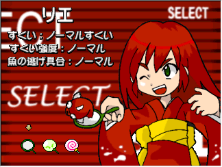
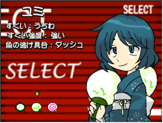
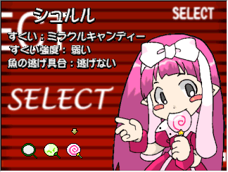

2003年１月コンテストパーク銀賞受賞作
このゲームは魚すくいゲームです。Zキー(決定キー)で魚をすくいます
しかも出てくるのは金魚だけではありません。イカや人魚、更にはミサイルまで出てきます
ノーマルモードは全10面で構成されており、最後に出てくるボスを倒すとクリアです
プレイヤーは三人のキャラクターからプレイキャラを選択することが出来ます。
タイムアタックではひたすら高得点を狙ってください
スクリーンショットを参照してください

魚をすくうときには、ほんとにすくうような気持ちですくいましょう
タイムアタックではシュルルで押しっぱなしにしているといいかもしれません